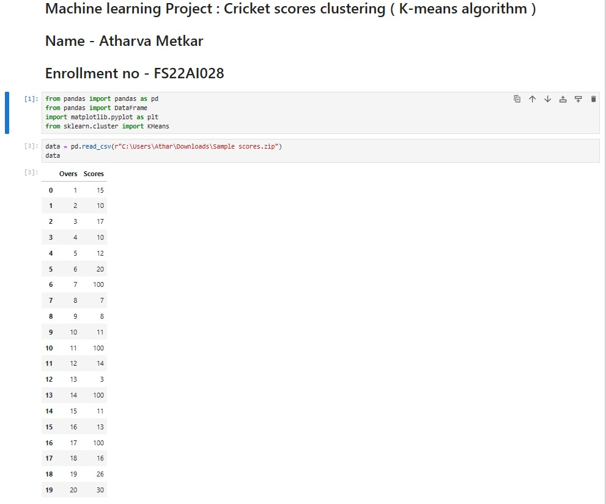
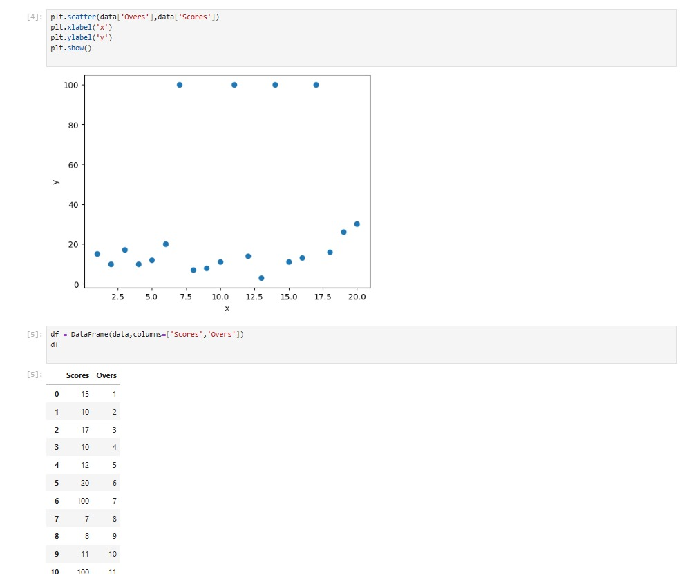
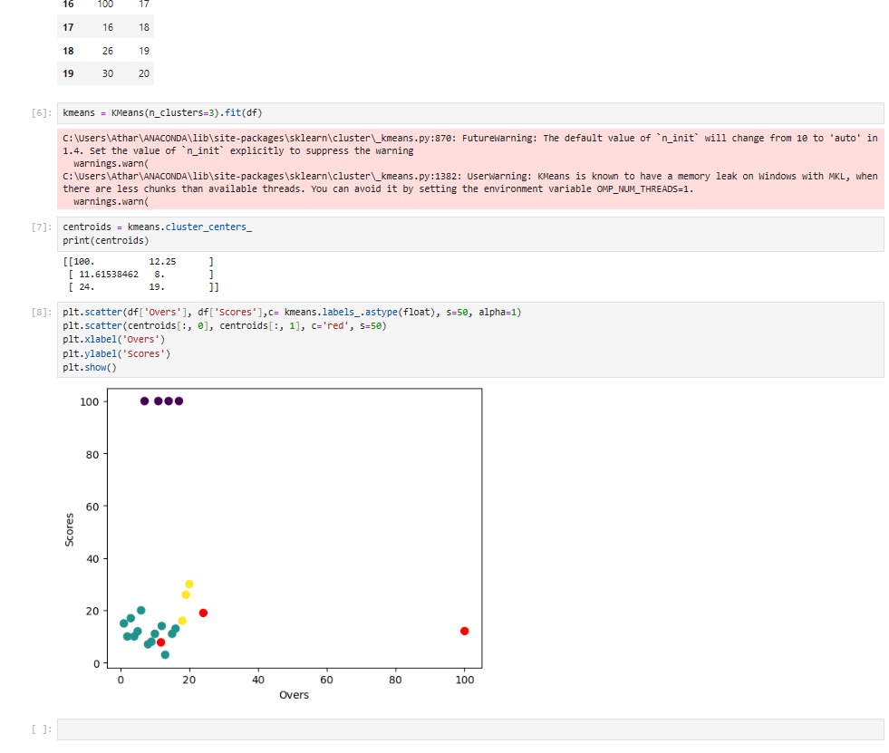

This project involved clustering cricket scores using the K-means algorithm. The objective was to group similar cricket scores into clusters based on various factors such as runs scored, wickets taken, match format, etc. Clustering cricket scores can provide insights into player performance, match outcomes, and playing conditions. The project included data preprocessing, feature engineering, model training using the K-means algorithm, and visualization of the clusters.


